Para você que...
- Usa a Wing ou vai usar em breve.
- Opera som em igrejas, eventos ou shows.
- Quer chegar em um culto ou show com confiança técnica.
- Quer dominar a mesa de verdade, não só apertar botões.

Aprenda a criar cenas do zero, dominar a equalização, compressão, gate e mixagem com a lógica específica da Behringer Wing.
Quero dominar a WINGR$ 391,00 em bônus disponíveis por tempo limitado • Acesso imediato • 7 dias de garantia
Aprenda ganho, EQ, comp, gate e organização de cena com exemplos práticos para usar no seu próximo evento.
Valor: R$ 97,00
Entenda fluxo de sinal, buses e montagem de cena com uma lógica clara e aplicável no dia a dia.Valor: R$ 97,00
Veja uma mixagem real em culto e show, com decisões técnicas que você pode reproduzir na sua própria mesa.Valor: R$ 197,00
Total dos bônus: R$ 391,00
De R$ 888,00 por tempo limitado
12x de R$ 10,13
ou R$ 97,00 à vista
Quero dominar a WING agora1 ano de acesso • 7 dias de garantia • R$ 391,00 em bônus
Me chamo Aguinaldo Ramos, e já fui técnico de monitor de Raimundo Fagner, Los Hermanos, Gabriel o Pensador, Ana Carolina, Padre Fábio de Melo, Detonautas, Leo Jaime, Simone, Teresa Cristina, entre outros artistas, nos maiores palcos do planeta.
Rock in Rio. Lollapalooza. Planeta Atlântida. Brazilian Day. João Rock. Réveillon de Copacabana. Rio das Ostras Jazz & Blues.
Esses não são nomes para impressionar. São os palcos onde cada detalhe técnico importa, onde não existe “mais ou menos” e onde a margem para erro é zero.
Já estou há mais de 35 anos nesse ambiente, aprendendo o que funciona de verdade quando o show precisa acontecer.
Hoje, com mais de 10.000 alunos formados, 140.000 inscritos no YouTube e 310.000 seguidores no Instagram, dedico meu tempo a transferir esse conhecimento para quem opera som na igreja ou em eventos seculares.
Será um prazer ser o seu professor nessa imersão.
Se por qualquer motivo você não ficar satisfeito com a Imersão na Wing nos primeiros 7 dias após a compra, é só pedir o reembolso.
Sem perguntas, sem burocracia, sem questionamento. 100% do seu dinheiro de volta.
Quero dominar a WINGSim, e talvez seja o melhor momento para comprar. Quem entra na Wing sem saber como ela funciona perde semanas, às vezes meses, tentando descobrir na tentativa e erro.
Você pode estudar agora, entender a teoria e a estrutura, e quando a Wing chegar na sua mão você já sabe o que está fazendo.
O YouTube tem fragmentos. A Imersão tem estrutura. Você pode passar horas assistindo vídeos aleatórios sem nunca ter uma visão completa de como tudo se conecta dentro da Wing.
A Imersão foi construída do zero para a Wing, na ordem certa, por um profissional que operou essa mesa em turnês internacionais.
A Imersão começa do Módulo 0, Fundamentos da Wing, exatamente para quem está chegando sem experiência.
A progressão vai do básico ao avançado em sequência lógica.
O acesso é por 1 ano. Assista no seu ritmo: uma aula por semana, um módulo por mês ou em um fim de semana de imersão.
O conteúdo não vai a lugar nenhum. Você pode começar agora e voltar quando precisar revisar.
Considere o outro lado do cálculo: quantas horas você já perdeu tentando descobrir o roteamento da Wing sozinho?
Por R$ 97 você tem 7 horas de imersão, R$ 391 em bônus e 7 dias de garantia incondicional.